| -- Générer une commande SoftSharpen (version 8.8) -- |
Preset (optionnel) Anim : Traitement particulier pour une animation Film : Pour un film DivX (visages non débuités pendant le traitement) Light : Traitement faible pour une source déjà propre VHS : Traitement fort pour une source "pas terrible" On peut préciser un preset, puis spécifier des valeurs particulières pour certains paramètres ci-dessous lorsque les valeurs par défaut ne sont pas satisfaisantes. |
| Nom de variable de la vidéo à traiter (optionnel)
Exemple d'un code avisynth où une variable fait référence à la vidéo créée
video = AviSource("video.avi") video = video.Tweak(sat=1.1) video = video.SoftSharpen() return(video) La même chose, mais sans nom de variable pour la vidéo créée
AviSource("video.avi")
Tweak(sat=1.1) SoftSharpen() |
| Optimisation du constraste, gain de lumière /!\ expérimental /!\ flottant positif (conseillé entre 1 et 5) ou 0 pour désactiver Cliquer pour obtenir une explication |
| Niveau de DCT entier compris entre 0 et 14 (conseillé entre 4 et 7) ou 0 pour désactiver Cliquer pour obtenir une explication |
| Traitement "rapide" Cocher cette option pour accélerer le traitement, mais au prix d'une qualité moindre |
| Debug verbose Cocher cette option pour faire afficher les constantes du script sur l'image | Debug show Cocher cette option pour faire apparaître sur l'image les zones traitées : - en vert, les zones avec hausse de netteté ; - en bleu, les zones floutées ; - en rouge, les zones débruitées. |
| La commande avisynth est |
Répertoire des dll |
Subbat & Leon1789
Option "Anti-aliasing" (aa) de SoftSharpen...
Comme son nom l'indique, l'option "Anti-aliasing" est un remède contre l'aliasing (effet d'escalier formant des petites lignes brisées visuellement désagréables).
Dans la commande SoftSharpen, valider cette option se traduira comme suit :
SoftSharpen(aa=true)
L' "Anti-aliasing" est très gourmand en temps de traitement et floute légèrement l'image : il faut donc l'utiliser uniquement si nécessaire, et souvent effectuer une hausse de "Netteté" (paramètre sharp de SoftSharpen) pour compenser l'effet floutant.
Afin d'illustrer ce qu'apporte l'option "Anti-aliasing", il vous est proposé un comparatif, en image, pour constater le "rendu" vidéo :
- Anti-aliasing (aa=true)
- Anti-aliasing + Hausse de Netteté (aa=true, sharp=25)
NB : l'image grise annexe présente les "escaliers" sur lesquels le traitement a porté.

L'option de "Deblending" (blend) de SoftSharpen...
Comme son nom essaie de l'indiquer, l'option de "Deblending" permet de réduire l'effet étrange de "blend" pouvant apparaître sur une vidéo. Typiquement, ceci est dû à un changement de fréquence d'images par seconde effectué avec un mélangeur d'image. Il en résulte des images contenant des objets fantômes, genre personnages à 2 têtes, 4 bras et 2 épées... Les valeurs conseillées pour cette option oscillent entre 5 et 10 (nombre entier). Plus la valeur est petite, plus l'effet de correction est important. La correction de "blend" peut être conjuguée à une diminution optimisée de la fréquence d'images par seconde (option "fps" de SoftSharpen).
Dans la commande SoftSharpen, valider cette option se traduira comme suit :
SoftSharpen(blend=Deblend)
Une utilisation adéquate de la correction de "blend" permet à la fois une augmentation de la netteté de la vidéo, mais aussi de sa compressibilité.
A trop haute dose (c'est-à-dire pour des valeurs faibles de "blend"), la correction de blend peut provoquer une perte conséquente d'images nécéssaires au bon déroulement de la vidéo. Par exemple, un effet d'acoups peut apparaîte lors de travelling. Il faut donc utiliser cette option uniquement quand cela est nécessaire.
Afin d'illustrer ce qu'apporte l'option de "Deblending", il vous est proposé une image pour constater le "rendu" vidéo :
- Deblending activé (blend=15)
Paramètrage de l'option "Floutage" (blur) de SoftSharpen...
Comme son nom l'indique, l'option "Floutage" permet de flouter votre vidéo, précisément en fonction du mouvement des objets (à ce sujet, voir le paramètre Seuil de mouvement). Les valeurs conseillées oscillent entre 12 et 20 (nombre entier).
Dans la commande SoftSharpen, cette option se traduira comme suit :
SoftSharpen(blur=floutage)
Le "Floutage" des objets en mouvement ne se voit pas quand on regarde une vidéo défiler normalement : on ne peut voir le flou que lors d'un arrêt sur image. Par ailleurs, même sur une vidéo figée, ce "Floutage" n'est pas excessif et ne choque pas. L'intérêt du "Floutage" du mouvement est double : d'une part, il permet d'économiser du débit (de manière très modérée malheureusement), contrairement à la hausse de netteté (qui, elle, est très gourmande). D'autre part, ce "Floutage" permet d'estomper dans une certaine mesure les artefacts pouvant éventuellement apparaître sur les objets en mouvement (sur une source de trop bas débit, ou après le fort débruitage temporel par exemple).
Afin d'illustrer ce qu'apporte l'option de "Floutage", il vous est proposé une image pour constater le "rendu" vidéo :
- Floutage des mouvements (blur=30) : le bras à l'arrière plan bouge, de droite à gauche, pour fermer le rideau. On peut flouter ce mouvement.
NB : sur l'image annexe, le bleu indique la zone floutée (mouvement de bras).


Paramètrage de l'option "Dis. Cos. Trans." (dct) de SoftSharpen...
L'objectif de l'option "DCT" est de permettre une diminution du débit vidéo en limitant volontairement la précision de la DCT utilisée par les codecs vidéos. Cela implique une perte de qualité plus ou moins importante en fonction de la diminution du débit. Les valeurs conseillées pour cette option oscillent entre 4 et 7 (nombre entier).
Dans la commande SoftSharpen, cette option se traduit comme suit :
SoftSharpen(dct=DCT)
Si, après employé SoftSharpen, on exécute à nouveau un traitement d'image (*), l'effet de l'option "DCT" sera annulé. Pour que l'option "DCT" soit intéressante, il faut que le résultat du traitement par SoftSharpen soit envoyé "directement" au codec vidéo. Enfin, l'option "DCT" ne peut être validée que si les largeur et hauteur de l'image sont multiples de 16.
(*) Changer la fréquence FPS, incruster des sous-titres, ne comptent pas comme des traitements d'image.
Afin d'illustrer ce qu'apportent l'option "DCT", il vous est proposé un comparatif, en image, du "rendu" vidéo selon 4 paramètrages distincts :
- Petite valeur = pas de perte de qualité, mais diminution limitée du débit (dct=3)
- Valeur intermédiaire = diminution sensible du débit, faible perte de qualité (dct=6)
- Valeur élevée = forte diminution du débit, mais déterioration sensible de l'image (dct=9)
- Valeur excessive = diminution extrême du débit, mais image inexploitable (dct=12)
NB : l'image grise annexe présente les lieux et intensités des modifications dues à l'option "DCT", ainsi que le poids de l'image obtenue à gauche.
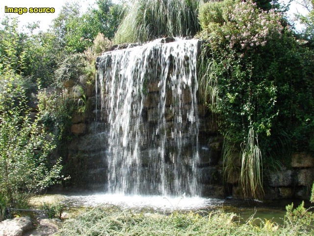Source
Petite valeur = pas de perte de qualité, mais diminution limitée du débit (dct=3)
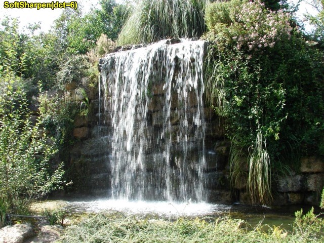Valeur intermédiaire = diminution sensible du débit, faible perte de qualité (dct=6)
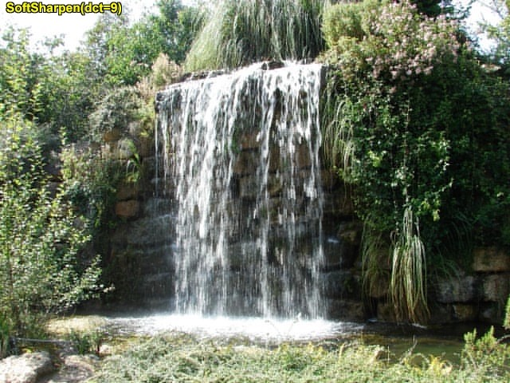Valeur élevée = forte diminution du débit, mais déterioration sensible de l'image (dct=9)
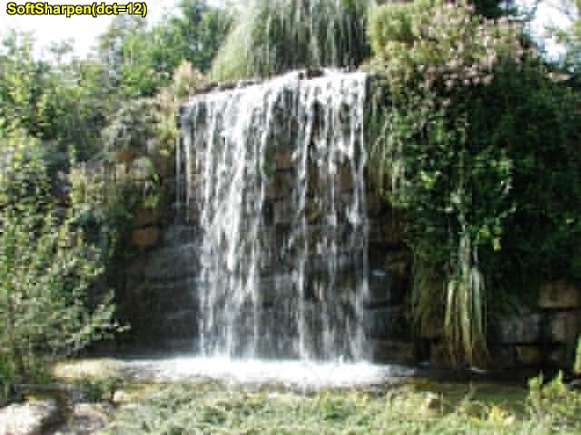Valeur excessive = diminution extrême du débit, mais image inexploitable (dct=12)
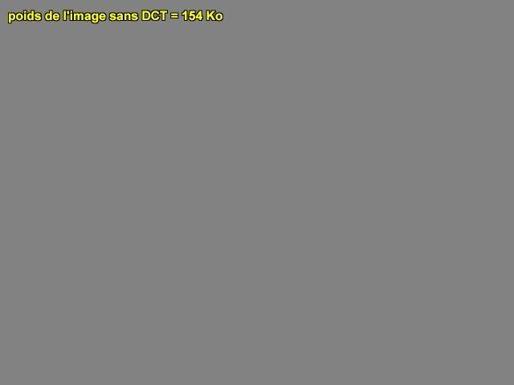
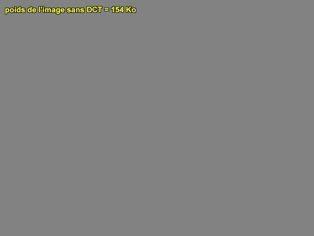
L'option de "Debanding" (deban) de SoftSharpen...
Comme son nom essaie de l'indiquer, l'option de "Debanding" permet de réduire l'effet de "blanding", un effet de vague apparaissant sur les larges plages de couleur légèrement dégradée. Cela peut être dû par exemple un débruitage spatial trop important. Les valeurs conseillées pour cette option oscillent entre 1.2 et 2.0 (nombre flotant). Plus la valeur est grande, plus l'effet de correction est important.
Dans la commande SoftSharpen, valider cette option se traduira comme suit :
SoftSharpen(deban=Debanding)
Cette option n'a malheureusement pas l'air de fonctionner sur les sources en niveaux de gris.
Afin d'illustrer ce qu'apporte l'option de "Debanding", il vous est proposé une image pour constater le "rendu" vidéo :
- Debanding activé (deban=2.0)
L'option de "Deblocking" (debl) de SoftSharpen...
Comme son nom l'indique, l'option de "Deblocking" permet de réduire les blocs disgracieux pouvant apparaître sur une vidéo. Typiquement, ceci est dû à une compression excessive, ou parfois à un débruitage temporel trop fort dans SoftSharpen. Les valeurs conseillées pour cette option oscillent entre 1 et 20 (nombre entier).
Dans la commande SoftSharpen, valider cette option se traduira comme suit :
SoftSharpen(debl=Deblocking)
A haute dose, le "Deblocking" provoque un certain floutage de l'image : ne l'utiliser que si nécessaire.
Par ailleurs, cette option est incompatible avec avisynth MT.
Afin d'illustrer ce qu'apporte l'option de "Deblocking", il vous est proposé une image pour constater le "rendu" vidéo :
- Deblocking activé (debl=20)
L'option de "Désentrelacement" (deint) de SoftSharpen...
Comme son nom l'indique, l'option de "Désentrelacement" permet de désentrelacer une vidéo entrelacée...
Dans la commande SoftSharpen, valider cette option se traduira comme suit :
SoftSharpen(deint=true)
Le "Désentrelacement" est gourmand en temps de calcul : ne l'utiliser que si nécessaire. Ne pas confondre l'entrelacement d'une vidéo et l'aliasing.
Afin d'illustrer ce qu'apporte l'option de "Désentrelacement", il vous est proposé une image pour constater le "rendu" vidéo :
- Désentrelacement (deint=true)
Paramètrage des options de "Débruitages spatial et temporel" (denois et denoisT) de SoftSharpen...
Comme leurs noms l'indiquent, les options de "Débruitage" permettent de débruiter une vidéo, dans le but d'améliorer le rendu et/ou de diminuer le débit nécessaire. Pour chaque pixel de l'image, le principe du "Débruitage spatial" repose sur l'analyse d'une petite région autour de ce pixel pour détecter si celui-ci est bruité ou pas (et corrige le pixel le cas échéant). Le principe du "Débruitage temporel" est repose sur l'analyse de ce pixel sur les images précentes et suivantes. Bien qu'il existe des filtres de débruitage spatio-temporels "tout-en-un", les deux "Débruitages" sont indépendants dans SoftSharpen. Les valeurs conseillées pour ces débruitages oscillent entre 2 et 10 (nombre entier).
Dans la commande SoftSharpen, ces options se traduiront comme suit :
SoftSharpen(denois=débruitage_spatial, denoisT=débruitage_temporel)
L'utilisation du "Débuitage" est relativement coûteuse en temps de traitement, mais son impact sur la compressibilité est indéniable et permet d'encoder à débit inférieur pour une même qualité d'image. Cependant, ne pas tomber dans l'excès, modérer le niveau du débruitage, sinon le résultat perd rapidement en qualité : perte de détails, lessivage des textures, blocking sur les mouvements, effet de vague sur les dégradés...
Par défaut, SoftSharpen utilise le gain de débit obtenu par le "Débuitage" pour réhausser la netteté de l'image (qui, elle, est très gourmande en débit).
Afin d'illustrer ce qu'apportent les options des "Débruitage", il vous est proposé un comparatif, en image, du "rendu" vidéo selon 2 paramètrages distincts :
- Débruitage correct = amélioration de l'image (denois=5)
- Débruitage excessif = détérioration de l'image (denois=25)
NB : la zone rouge sur l'image annexe indique où le debruitage a lieu. "Plus c'est rouge, plus le débuitage est important !"
 Source
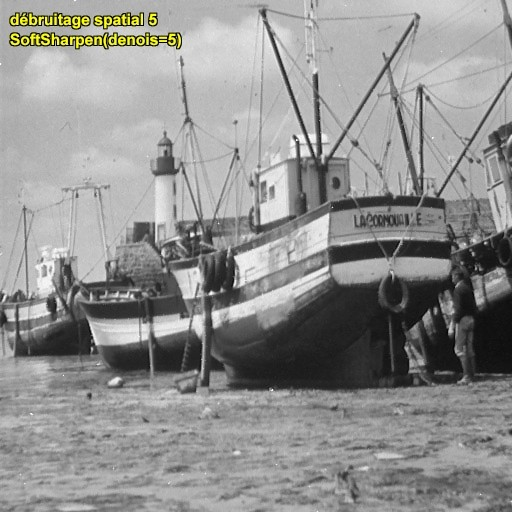Débruitage correct = amélioration de l'image (denois=5)
Débruitage excessif = détérioration de l'image (denois=25)
Source
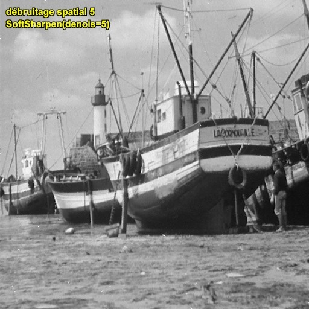Débruitage correct = amélioration de l'image (denois=5)
Débruitage excessif = détérioration de l'image (denois=25)
Paramètrage de l'option "Lignes" (line) de SoftSharpen...
L'option "Lignes" permet de renforcer les lignes noires de la vidéo. Les valeurs conseillées oscillent entre 10 et 40 (nombre entier).
L'option "Lignes" dispose d'un "sous-paramètre", l' "Affinage", permettant d'affiner les lignes noires. L' "Affinage" est essentiellement utile pour les dessins animés et ses valeurs conseillées varient de 1 à 4.
Dans la commande SoftSharpen, cette option se traduira comme suit :
SoftSharpen(line=Lignes.Affinage)
Même si SoftSharpen en limite l'impact, le renforcement des lignes noires implique une augmentation de débit. Il est donc préférable ne pas monter trop haut son niveau, évitant par la même occasion de faire apparaître des artefacts.
Afin d'illustrer ce qu'apporte l'option "Lignes" et de son sous-paramètre "Affinage", il vous est proposé un comparatif, en image, du "rendu" vidéo selon 3 paramètrages distincts :
- Accentuation modérée sans affinage (line=20.0)
- Accentuation forte sans affinage (line=40.0)
- Accentuation et affinage forts (line=40.4)
Source
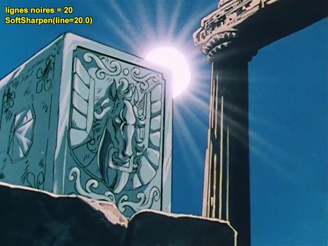Accentuation modérée sans affinage (line=20.0)
Accentuation forte sans affinage (line=40.0)
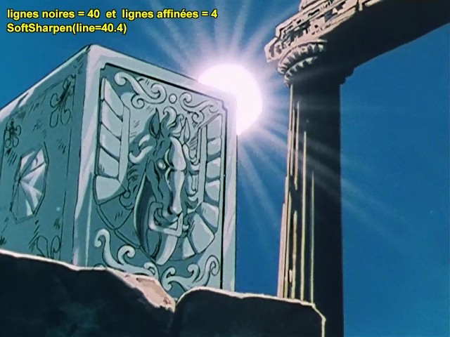Accentuation et affinage forts (line=40.4)
Paramètrage du "Seuil de Mouvement" (move) de SoftSharpen...
En analysant plusieurs images consécutives, on peut déterminer la quantité de mouvement des objets. Le "Seuil de Mouvement" est un niveau séparant les objets déclarés "relativement statitiques" et ceux déclarés "très mobiles". Cette différenciation est utile lorsque l'on veut optimiser la hausse de netteté d'une image, ou même en flouter une partie. Les valeurs conseillées pour ce "Seuil" oscillent autours de 35 (nombre entier).
Dans la commande SoftSharpen, cette option se traduira comme suit :
SoftSharpen(move=seuil)
Réhausser la netteté est certes visuellement intéressant, mais très coûteux en débit. De plus, lors d'un mouvement, la netteté d'un objet ne se voit pas avec l'oeil humain (mais avec l'oeil d'un codec, si !) : il paraît donc contreproductif de réhausser la netteté d'un objet en mouvement. C'est le seuil de floutage qui permet de spécifier à partir de quelle vitesse de déplacement on ne veut plus réhausser la netteté de l'objet.
Pour aller plus loin encore dans une économie de débit, un floutage peut avoir lieu sur ces zones en mouvement (voir aussi l'option de floutage). Plus le seuil est bas, plus la netteté s'estompe rapidement et plus le floutage se déclanche facilement (dans le cas où l'option de floutage est activée).
Afin d'illustrer ce qu'apporte le paramètre "Move", il vous est proposé un comparatif, en image, du "rendu" vidéo selon 2 paramètrages distincts :
- Détectection du mouvement (move=35) : sur l'image proposée, un bras à l'arrière plan bouge de droite à gauche, pour fermer le rideau. Par défaut dans SoftSharpen, ce mouvement est détecté puis flouté. Le reste de l'image est considéré comme immobile et SoftSharpen en réhausse la netteté.
- Désactivation de la recherche de mouvement (move=0) : en fait, imposer move=0 désactive la recherche de mouvement. Par conséquent, tout objet sera considéré comme immobile, rien ne sera flouté, la hausse de netteté se fera sur l'ensemble de l'image.
NB : sur l'image annexe, le vert indique une hausse de netteté, le bleu indique un floutage.
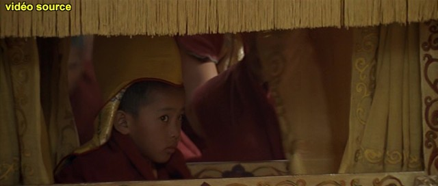Source
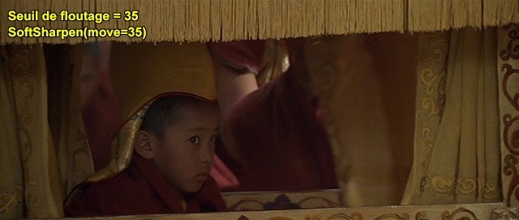Détectection du mouvement (move=35) puis floutage
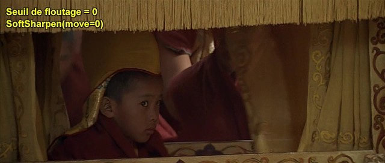Désactivation de la recherche de mouvement (move=0) et donc aucun floutage
Paramètrage de l'option "Netteté" (sharp) de SoftSharpen...
Comme son nom l'indique, l'option "Netteté" permet d'améliorer la netteté de votre vidéo. Les valeurs conseillées oscillent entre 13 et 25 (nombre entier).
L'option "Netteté" dispose d'un "sous-paramètre", la "Balance", permettant d'appliquer cette dernière plutôt sur les contours ou sur les textures. La valeur de cette "Balance" varie de "0" à "9". Règlée à "0", la "Netteté" s'appliquera sur les contours, alors qu'à "9", elle s'appliquera sur les textures.
Dans la commande SoftSharpen, cette option se traduira comme suit :
SoftSharpen(sharp=netteté.balance)
Même si SoftSharpen en limite l'impact, l'augmentation de netteté est gourmande en débit. Il est donc préférable ne pas monter trop haut son niveau, évitant par la même occasion de faire apparaître des artefacts.
De la même manière, plus la balance penche vers le coté Texture, plus c'est couteux !
Afin d'illustrer ce qu'apporte l'option "Netteté" et de son sous-paramètre "Balance", il vous est proposé un comparatif, en image, du "rendu" vidéo selon 3 paramètrages distincts :
- Augmentation de la netteté des contours (sharp=25.0)
- Augmentation de la netteté des contours et des textures (sharp=25.5)
- Augmentation de la netteté des textures (sharp=25.9)
NB : la zone verte sur l'image annexe indique la zone où la hausse de netteté a eu lieu. "Plus c'est vert, plus la hausse est importante !"
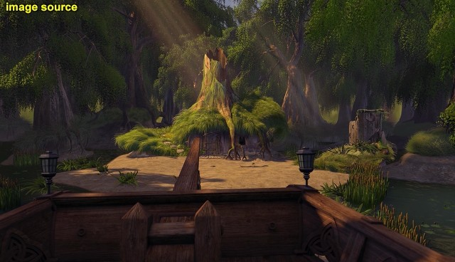Source
Amélioration de la netteté des contours (sharp=25.0)
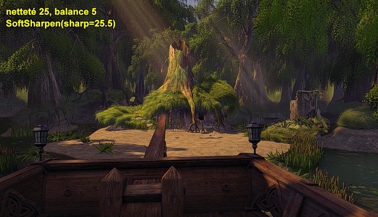Amélioration de la netteté des contours et des textures (sharp=25.5)
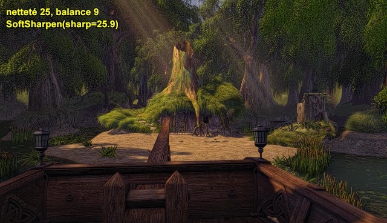Amélioration de la netteté des textures (sharp=25.9)
Paramètrage de la "Lumière et contraste" (gain) de SoftSharpen...
Comme son nom l'indique, l'option "Lumière et contraste" permet d'améliorer la luminosité de votre vidéo et d'en optimiser le contraste de manière automatique, en fonction des scènes. La valeur du paramètre indique un niveau maximum de l'augmentation. Les valeurs conseillées oscillent entre 1 et 5 (nombre entier).
Dans la commande SoftSharpen, cette option se traduira comme suit :
SoftSharpen(gain=lumiere)
L'augmentation de la luminosité n'est pas constante sur l'ensemble de la vidéo car elle est gérée de manière automatique : il se peut qu'il n'y ait aucun changement sur certaines scènes. Par ailleurs, l'utilisation de ce paramètre induit une augmentation du débit (sur les passages où l'optimisation du contraste a lieu) puisqu'il accentue les différences de luminosité de l'image. Enfin, sur des sources dont la luminosité varie rapidement, l'utilisation de l'option "Lumière et contraste" est déconseillée...
Afin d'illustrer ce qu'apporte l'option de "Lumière et contraste", il vous est proposé une image pour constater le "rendu" vidéo :
- Gain de lumière et optimisation du contraste (gain=3)
Subbat & Leon1789